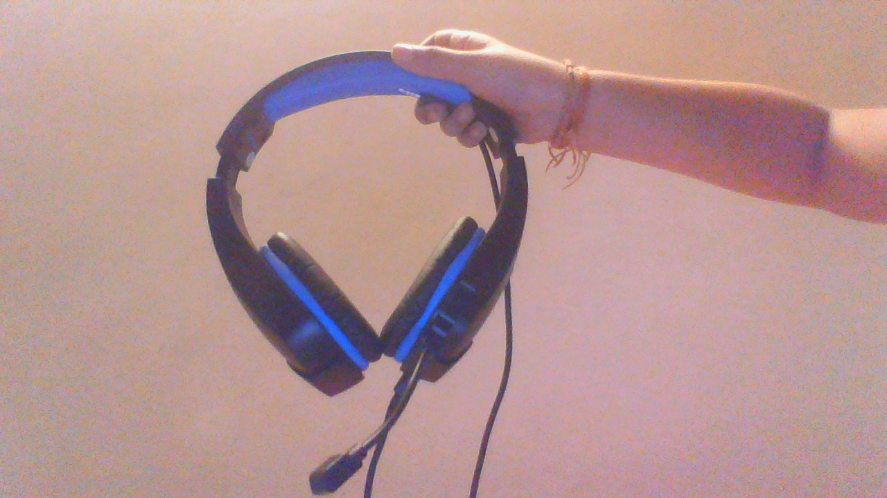

Google Lens
VS
Mobile net
Developed by: 💜Damini the Coder💜
Let's find out which Image identification service is more accurate.
Let's find out which Image identification service is more accurate.
This is a bag

Result on Google Lens: girls cartoon printed college bag
Result on Mobilenet: combination lock
I think google lens is more accurate but it is not a collage bag
These are Headphones
Result on Google Lens: 3D printable Ikea desk drawer headphone holder by jacob
Result on Mobilenet: sun glasses, dark glasses, shades
I think google lens because it is not actually a holder but it is partly correct
This is a wireless computer mouse.

Result on Google Lens: HP FM510a Wireless mouse
Result on Mobilenet: microphone, mike
Google lens is more accurate
This is a pot of artificial flowers.